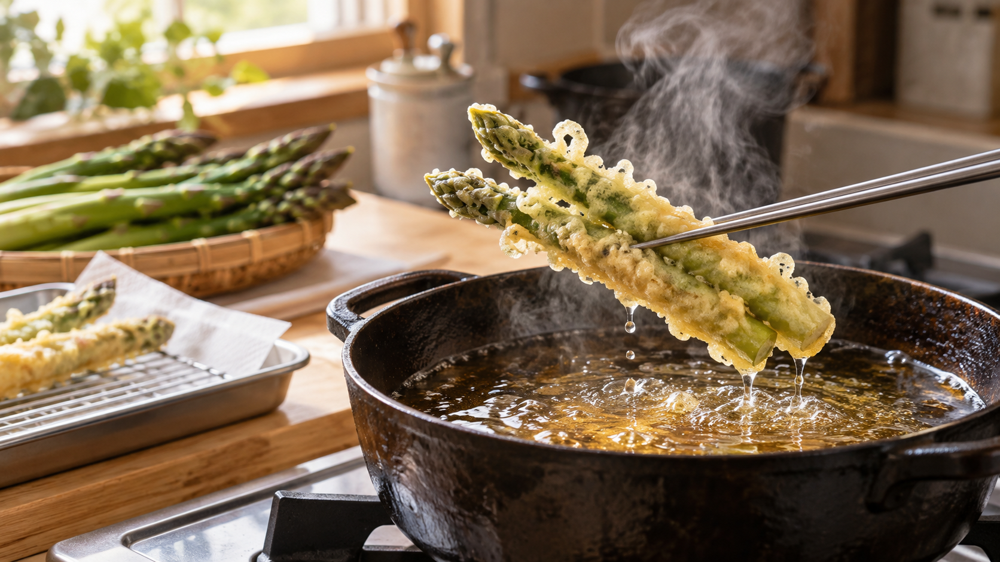

揚げ油に一度に入れると衣が重くなる？｜油温と水蒸気の話
天ぷらを早く揚げ終えようと、具を鍋いっぱいに入れたら、衣がしっとり重く感じられた。そんなとき、油の中では何が起きているのだろう。
具は少量ずつ入れ、次の分を入れる前に油温が戻るのを待つ。 具を入れると油温は下がる。下がり方が大きいと、衣から水が抜ける経過が変わり、食感にも影響しうる。ただし、重い食感を「油を多く吸ったから」とだけ説明することはできない。
衣の水は、泡になって外へ出る
揚げているときに見える泡の多くは、衣や具に含まれる水が熱で水蒸気になったものだ。衣の水が抜け、表面の構造ができるにつれて、歯ざわりも変わる。具をまとめて入れると油の熱が一度に使われ、油温が下がる。温度が低い状態が続けば、水が抜ける速さも変わる。
研究では何が確かめられたか
オクラホマ州立大学の揚げ物の解説は、食品の投入後に油温が下がってから回復する過程と、水分の抜け方や食感との関係を説明している。これは主に業務用の揚げ工程についての資料だ。
さつまいもの天ぷらを調べた研究では、油温によって衣の状態が変わり、低めの温度では水分の蒸発が十分に進まない様子が報告された。また、アスパラガスの天ぷらの研究では、はじめに衣の水が蒸発し、その後、具の水が衣へ移って外へ出る経過が示された。衣を軽く仕上げるには、表面だけでなく、水が抜ける過程を見る必要がある。
一方で、衣付き魚を揚げた研究では、温度を高くすると水分が速く減るとともに、油の吸収も増えた。食材、衣、揚げ時間で結果は変わる。「低温なら必ず油を多く吸う」とは言えない。
家庭では、油温が戻る余地をつくる
研究は「家庭の鍋に何本まで入れるべきか」を直接決めていない。それでも、具の投入で油温が下がり、温度が水分の抜け方に関わるという知見からは、鍋を具で埋めず、数回に分ける方法が理にかなっている。次の分を急いで入れず、温度計で油温の回復を確かめれば、毎回の揚がり方をそろえやすい。
アスパラガスの天ぷらを少量ずつ揚げる
約2人分。アスパラガス6本、市販の天ぷら粉50g、粉の袋に表示された量の冷水、揚げ鍋の指定量の油を用意する。
- アスパラガスの硬い根元を落とし、太ければ下側の皮を薄くむく。洗った後は表面の水気を拭く。
- 天ぷら粉を表示どおりの冷水で溶き、アスパラガスに薄くまとわせる。
- 鍋に指定量の油を入れ、調理用温度計で約170℃まで温める。加熱中は鍋から離れない。製品評価技術基盤機構の注意喚起も、揚げ鍋の使い方と油量に注意するよう促している。
- まず2～3本を静かに入れる。約2～3分を目安に、衣が固まり、具に火が通ったら引き上げて油を切る。太さや鍋によって時間は変わる。
- 油温が再び約170℃に戻ったことを温度計で確かめ、残りも2～3本ずつ揚げる。
温度計がない場合、泡だけで正確な温度は決められない。鍋と油の取扱説明に従い、温度を管理できる器具を使うと判断しやすい。
ほかの揚げ物にも通じること
冷凍ポテトや衣付きの魚を揚げるときも、食品を入れた直後の油温と、次の分を入れる前の回復に目を向けたい。ただし、適した温度や時間は食品ごとに異なる。包装の表示やレシピにある加熱条件を優先し、「小分けにする」と「油温を戻す」という考え方を組み合わせよう。
まとめ
具を一度に入れると油温が下がり、水分が抜ける経過が変わりうる。重い食感を油の吸収だけで決めつけず、まずは少量ずつ揚げて油温の回復を待つ。今日のアスパラガスなら、2～3本ずつが始めやすい。
参考資料
- Oklahoma State University Extension, “Industrial Deep Fat Frying”
- 日本調理科学会大会研究発表要旨「揚げ油の温度が天ぷらの衣の品質に及ぼす影響」、2012年
- 日本調理科学会大会研究発表要旨「揚げ過程における視覚情報がアスパラガスの天ぷらの品質に及ぼす影響」、2025年
- “Modelling the Mass Transfer Kinetics of Battered and Breaded Fish Nuggets during Deep-Fat Frying at Different Frying Temperatures”, 2020
- 製品評価技術基盤機構「揚げ物調理中の事故への注意喚起」